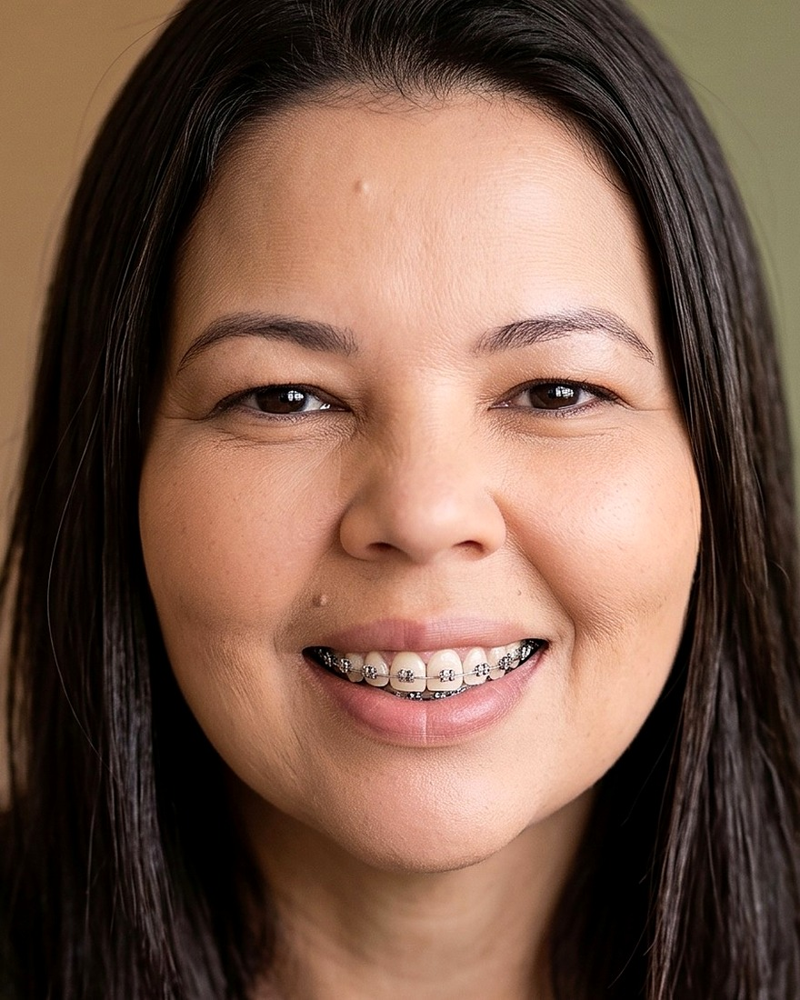
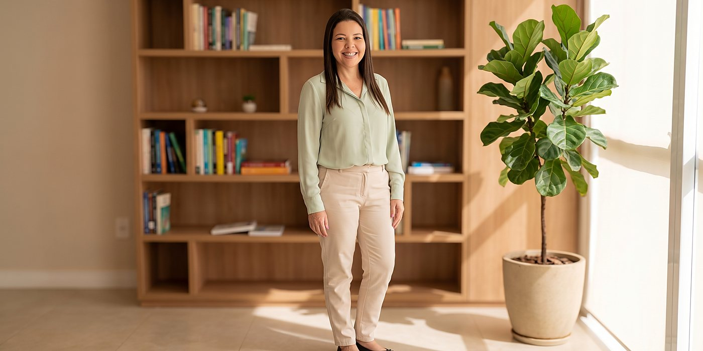

Psicanálise
O que é, afinal, falar em análise?
Sobre a regra da associação livre e por que dizer o que vem à cabeça não é tão simples quanto parece.
Atendimento psicológico com orientação psicanalítica para adultos e idosos, online e presencial em Volta Redonda/RJ. Um lugar reservado para você falar — no seu tempo, sem julgamento.
Selecione um tema para entender como ele aparece na clínica e de que forma o trabalho analítico pode acompanhar você.
A antecipação constante do que ainda não aconteceu.
A ansiedade aparece como uma espera permanente por algo ruim: pensamento acelerado, alerta que não desliga, sensações no corpo — aperto no peito, insônia, falta de ar. Ela costuma dizer de um conflito que ainda não pôde ser posto em palavras.
Quando o mundo perde a cor e o corpo perde o impulso.
Mais do que tristeza, é uma retirada do interesse pela vida: cansaço que o descanso não resolve, desânimo, isolamento, sensação de vazio ou de culpa. Muitas vezes há uma perda — nem sempre evidente — que não pôde ser elaborada.
Aquilo que aperta o peito e ainda não encontrou nome.
A angústia é um afeto que não engana: aparece sem objeto claro, como um mal-estar difuso, inquietação ou aperto. Na psicanálise ela não é apenas um sintoma a eliminar — é também uma bússola, um sinal de que algo importante pede elaboração.
Quando a comida responde a uma fome que não é do corpo.
Episódios de comer em excesso, com sensação de perda de controle, seguidos de culpa e vergonha. A relação com a comida costuma ocupar o lugar de outra coisa — um afeto, um vazio, uma angústia que não encontrou outra via de saída.
Elaborar uma ausência sem pressa de superá-la.
O luto não se restringe à morte: perde-se um vínculo, um projeto, um lugar, uma versão de si. É um trabalho psíquico que leva tempo e não segue etapas fixas — e que costuma se complicar quando não há espaço para falar dele.
Repetições que se impõem na relação com o outro.
Escolhas afetivas que se repetem, dificuldade de dizer não, medo do abandono, sensação de não ser suficiente. A forma como nos relacionamos carrega marcas antigas — e é possível reconhecê-las para não ficar refém delas.
Quando adiar vira sintoma, e não preguiça.
Sobrecarga, irritabilidade, exaustão e a sensação de estar sempre devendo. A procrastinação raramente é falta de vontade: costuma envolver medo de falhar, autoexigência elevada ou um conflito com o que se espera de você.

Sou Pâmella Silva Torres, psicóloga clínica com formação permanente em Psicanálise. Atendo adultos e idosos que buscam um espaço para falar sobre aquilo que insiste — a angústia que não passa, o sintoma que se repete, a perda que ainda pesa.
Meu trabalho não parte de fórmulas nem de respostas prontas. Parte da sua fala. É a partir dela, com tempo e regularidade, que algo pode se deslocar e ganhar outro sentido.
“Nem tudo o que nos atravessa cabe numa explicação rápida. Há coisas que só se organizam quando encontram alguém disposto a escutar até o fim.”
Nada aqui exige que você chegue com tudo claro. Começar já é parte do trabalho.
Você me chama no WhatsApp. Combinamos um horário e esclareço as dúvidas práticas antes de começar.
Os primeiros encontros servem para você falar do que o traz e para construirmos juntos a demanda.
Definimos frequência e horário fixo. A regularidade é o que sustenta o trabalho analítico.
Sessões de 50 minutos, online ou presenciais. Sem prazo pré-fixado: cada percurso tem seu tempo.
A psicanálise é uma abordagem clínica que trabalha com a fala livre e com aquilo que escapa ao controle consciente — sonhos, repetições, atos falhos. Não se organiza por metas de comportamento a curto prazo, mas por um percurso de elaboração. O atendimento é feito por psicóloga registrada no CRP.
Não há prazo definido — e desconfie de quem promete um. O tempo varia conforme cada pessoa e cada questão. O que combinamos desde o início é a frequência e a regularidade; o percurso vai se desenhando ao longo do trabalho.
Em geral, uma vez por semana, em horário fixo. Em alguns casos pode ser indicada frequência maior. Isso é conversado nas entrevistas iniciais, considerando sua disponibilidade.
Sim. O atendimento psicológico online é regulamentado pelo Conselho Federal de Psicologia e acontece por videochamada, em ambiente reservado. É uma opção para quem mora em outra cidade, viaja com frequência ou tem dificuldade de deslocamento.
Sim. O sigilo é um dever previsto no Código de Ética Profissional do Psicólogo e é a base do trabalho clínico. As exceções são estritamente as previstas em lei, sempre com a devida ponderação.
Não. Muita gente chega dizendo apenas que “algo não vai bem”. Não é preciso chegar com o problema formulado — a formulação é justamente parte do que se constrói na análise.
O atendimento é particular. Valores e formas de pagamento são informados diretamente no primeiro contato pelo WhatsApp.
Reflexões sobre o sofrimento psíquico e sobre o que a escuta analítica pode oferecer.
Sobre a regra da associação livre e por que dizer o que vem à cabeça não é tão simples quanto parece.
Por que a psicanálise entende a angústia como um sinal — e não apenas como um sintoma a suprimir.
Uma leitura da compulsão alimentar para além do controle e da culpa.

Se algo em você pede escuta, podemos conversar sobre como iniciar um acompanhamento.